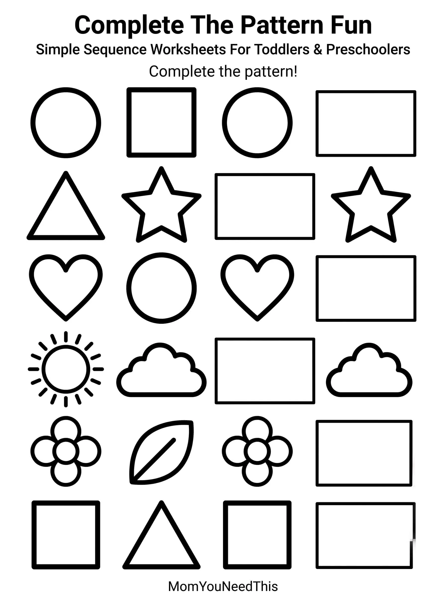

Complete Pattern AB Free Printable AB Pattern Completion Activity For Kids
Help toddlers and preschoolers practice early pattern recognition with this fun, kid-friendly AB pattern completion printable. Children can identify repeating sequences, figure out what is missing, and build early math, logic, and problem-solving skills through playful learning.
Quick Answer
This complete the pattern AB printable gives toddlers and preschoolers rows of repeating picture sequences with one shape missing. Children study each two-part pattern, work out what belongs in the gap and draw it in, building pattern completion and shape recognition. A parent's key on the page shows where every gap is. Free PDF — download, print, no signup.
At a Glance
- Ages: Toddlers and preschoolers
- Activity: Drawing the missing shape to complete AB patterns
- Skills: Pattern completion and shape recognition
- Format: Printable worksheet (PDF)
- Cost: Free, no signup
🧩 Complete The Pattern
This Complete the Pattern AB worksheet carries its patterns in shape. Six rows of black-and-white pictures — circles and squares, triangles and stars, hearts, a sun and a cloud, a flower and a leaf — each alternate in an AB pattern, and each row has one empty box where a shape is missing. Your child's job is to figure out which shape belongs in the box and draw it there. No colors are involved at all: the whole puzzle is in the shapes.
Two of the six gaps are sneakier than the rest. Most boxes sit at the end of their row, where the job is predicting what comes next — but in the triangle-and-star row and the sun-and-cloud row, the empty box sits in the middle, with a shape after it. Those rows ask your child to check both sides of the gap, which is a real step up from continuing a pattern off the end.
Free Complete Pattern AB Printable

How To Use This Printable
Go row by row, naming the two shapes out loud as you point: “circle, square, circle…” Naming matters — a pattern a child can say is a pattern they can hold in mind. When you reach the empty box, stop and ask which shape is missing before any drawing happens. The deciding is the exercise; the drawing is just how the answer gets written down.
For the rows where the box sits at the end, the question is prediction: what comes next? For the two middle-gap rows (triangle–star and sun–cloud), teach your child to look at BOTH neighbors — the shape before the box and the shape after it. The one after is the clue that makes middle gaps solvable: the pattern has to run unbroken through the box in both directions.
Accept wobbly drawings gladly. A lopsided star that the child chose correctly is a fully correct answer — this sheet tests pattern thinking, and the shape-drawing is pre-writing practice riding along. If a shape is too hard to draw (the sun and the flower are the ambitious ones), a simplified version with the right idea counts.
Why Learn Pattern Completion?
Completing a pattern is a different — and harder — job than continuing one. A continuation only asks “what comes next?”, but a missing piece in the middle asks a child to hold the whole repeating unit in mind and test a candidate against both sides. That holding-and-testing is working memory in action, the same mental muscle that later holds a number in mind through a math problem or a sentence's beginning through to its end.
Shapes are the right unit for this step. Unlike colors, shapes have to be produced, not just picked — so every answer also practices drawing circles, squares, triangles and more, the exact strokes early writing is built from. Six rows cycle through nine different shapes, which makes the sheet a quiet shape-recognition review as well: a child who can find the missing leaf has to know what a leaf looks like.
🎁 Keep Exploring Free Learning Activities
Discover more printable activities, toddler resources, and learning ideas created for busy parents.
🎁 View All Free Resources🖨️ How to Use This Printable
Get started in minutes — everything here is free and made for busy parents.
- Download the printable. Tap the download button to save the free Complete the Pattern AB file to your device.
- Print it out. Use any home printer and regular paper — cardstock works great for pages little hands will use again and again.
- Learn together. Sit with your child, name each row's two shapes out loud, and let them draw the missing shape in the empty box. For the two rows where the box sits mid-pattern, remind them to check the shape after the box too.
- Explore more. Check the free printables linked below for your next activity.
📋 Row By Row — Where The Gaps Are (Parent's Key)
Circle – square: the box is at the end. Missing shape: square.
Triangle – star: the box is third, with a star after it. Missing shape: triangle.
Heart – circle: the box is at the end. Missing shape: circle.
Sun – cloud: the box is third, with a cloud after it. Missing shape: sun.
Flower – leaf: the box is at the end. Missing shape: leaf.
Square – triangle: the box is at the end. Missing shape: triangle.
Rows 2 and 4 are the challenge rows — their gaps sit mid-pattern, so the shape after the box is the giveaway clue. If your child stalls on those two but sails through the end gaps, that is the expected pattern, not a problem: predicting forward is learned first, and checking both directions comes next. Point at the shape after the box and ask “if this one is a star, what has to sit right before it?”
❓ Complete the Pattern AB FAQs
Is this Complete the Pattern AB printable free?
Yes — this Complete the Pattern AB printable is 100% free to download and print, like every printable on MomYouNeedThis. No signup, no payment, just tap the download button. It is an all-black-and-white sheet (six rows of shape patterns), so it is cheap to print as many times as your child wants another run at the middle-gap rows.
How do I teach patterns with this printable?
Name the shapes, then find the gap. Point along a row saying the shapes together — “circle, square, circle” — then ask which shape belongs in the empty box, and let your child draw it. When the box is at the end of a row, the job is predicting what comes next. In two rows (triangle–star and sun–cloud) the box sits in the middle, so teach your child to check the shape after the box as well. Wobbly drawings count — choosing the right shape is the skill being practiced.
Why are patterns important for preschoolers?
Completing patterns builds more than pattern sense. Continuing a pattern only asks what comes next, but filling a gap — especially a gap in the middle — asks a child to hold the whole repeating unit in mind and check both directions, which is early working memory and logic. Because the answers here are drawn shapes rather than colors, the same sheet also practices shape recognition and the drawing strokes early writing needs.
🔗 More Free Printables You’ll Love
Pair this printable with more free learning activities from the MomYouNeedThis library.
- 🔤 Alphabet Coloring PagesFree A to Z alphabet coloring printables for toddlers and preschoolers.
- 🎏 Free Animal Pattern ABFree animal pattern ab printable for toddlers and preschoolers.
- 🎏 Free Animal Pattern WorksheetsFree animal pattern worksheets printable for toddlers and preschoolers.
- 🎏 Free Color Pattern ABFree color pattern ab printable for toddlers and preschoolers.